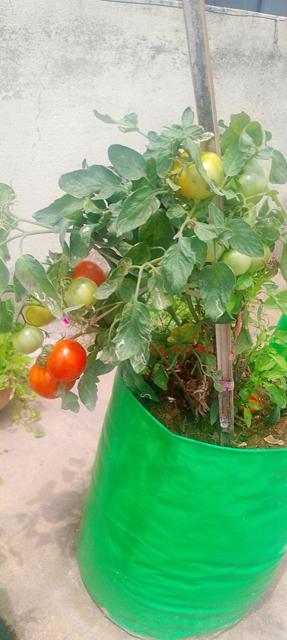

Weather app
ThursdayHumid stretch

Know what your garden needs.
Build North · Demo Day · Oct 29, 2026
The problem
Now what?
Caught late, it reaches the neighbours.
And a short season leaves little time to recover.
Today's plant apps go from your photo straight to an answer.
Result
Septoria leaf spot
Highly confident Treat nowBehind the answer
Nothing shown
No hedge. No shown work. No question to settle a doubt.
Weather app
Plant app
Your notes
Extension guides
“A humid stretch starts Thursday, and your tomatoes already show early blight: act before then.”
…see the spot
…name the problem
…plan the fix
…talk it through
The solution
Photograph a plant. Get a diagnosis, an action plan and a chat that knows your garden.
Know what your garden needs.
Three pillars
Vision on a home GPU rig reads the leaf, the soil and the surroundings.
Weather, soil data, the plant’s history and curated disease profiles.
No single model makes the call.
SurrealDB history · memoryA cited plan you can check off, and a chat that knows your garden.
How it works
job
job
claim
claim
job
job
leaves · species
findings
evidence
plan
The pipeline
No single model makes the call.
The call
Trust
Garden-like dev photos
%67 of 72
true problem in the disease head’s top 3
Held-out test split
%36 of 43
top 3 again, on photos scored only once
Evaluation set
labelled cases
Perception speed
1.2 s
6 photos and 40 leaf crops on one 8 GB RTX 3070
Licences
Apache-2.0
or MIT: every third-party model we ship
Photos
Faces blurred
and EXIF stripped before storage
Home rig
No open ports
workers pull jobs over outbound HTTPS
Sign-in
Clerk MFA
every garden query checks membership
Accuracy is for the disease head alone. End-to-end diagnosis accuracy is not measured yet.
Live demo
Today's weekly check of Tomato 2 is the live scan.

The demo · 1 of 9
Frost on Thursday. Tomato 1 is recovering. Today's task: check Tomato 2.
Shown with the app's demo data
The demo · 2 of 9
LiDAR checks the distance. The dial fills one segment per needed shot.
Shown with the app's demo data
The demo · 3 of 9
Each stage streams to the phone over SSE the moment the rig finishes it.
Two problems fit. Instead of guessing, it asks one question.
One tap on Yes, and the evidence settles it.
Do the spots have rings, like a target?
Shown with the app's demo data
The demo · 4 of 9
What matched, what drives the risk, a helper to leave alone, and a plan that cites its sources.
Shown with the app's demo data
The demo · 5 of 9
When, why and how, in large type, with the source it comes from. A time phrase becomes dated tasks.
“every 3 days until Nov 1”
Adds 5 tasks
Spotted leaves carry the fungus to the leaves above them.
Cut them off at the stem and bag them. Don't compost them. Wipe the pruners between cuts.
New spots on the upper leaves mean the blight is still active.
Look at the upper and lower leaves every 3 days until Nov 1.
Shown with the app's demo data
The demo · 6 of 9
Claude works through its tools in view, then streams an answer.
Every number in a block is a record's, never the model's.
What it proposes waits for your OK. What you tell it, it remembers.
Yes. Frost is likely on Thursday night1. Four of your plants are tender, so cover them by Thursday evening.
Shown with the app's demo data
The demo · 7 of 9
Maple Row Farm's crew reports in Slack and its spray log in Google Drive, searched and cited.
Tested on Era by Eon's Slack and Drive simulators
On Aug 2, after leaf spots on the tomatoes1. This week in #field-reports, Priya saw brown rings on the lower tomato leaves again2.
Lower leaves on both tomatoes in the east bed have brown rings again.
Shown with the app's demo data
The demo · 8 of 9
Built from the LiDAR map: plants sized by measurement, coloured by health.
Shown with the app's demo data
The demo · 9 of 9
Tomato 1's spots, as a share of its measured leaves, at each check after the plan began.
Tomato 2, 40 cm away, is “also found on”. We don't claim where it came from.
Shown with the app's demo data
Built with
The chat, the agent and the plan writer
Sign-in with MFA; the API checks its tokens
One database for records, graph, jobs
Shared memories, by garden or by plant
A simulated farm Slack and Drive
The iPhone app, LiDAR, Live Activity
Also used, not partners: Rust · RustFS · ONNX Runtime · vLLM · Python
claude-opus-5-5 · claude-haiku-5-5
Claude writes the plan and answers the chat.
agent tools
Answer blocks come from tool results, never the model's arithmetic.
On the demo's path
@clerk/expo 4
Clerk signs you in; the API checks every token.
RS256only
On the demo's path
v3.3.4 · pinned by digest
One database holds everything a scan touches.
tables
records · graph · vectors · geo · jobs · memory
On the demo's path
hosted memory service
A newer fact replaces the old one, and the history stays.
live requests measured
On the demo's path
Slack · Google Drive simulators
Era gave our farm connectors a farm to test on.
/54answers right
About 120 messages over 180 days
On the demo's path
SDK 57 · React Native 0.86
Expo ships the iPhone app, native where it counts.
app tests
Mock mode runs the whole demo
On the demo's path
The demo's path
Built during Build North, Oct 16–25: an iPhone app, a Rust backend, a home GPU rig, and Claude.
Built with
Questions?
Team GreenLens · Build North Demo Day · Toronto
Photos from Wikimedia Commons: early blight on tomato leaves by Dwight Sipler (CC BY 2.0); ripe tomato by Clintacc (CC0); Hungarian wax pepper by Jeff Kwapil (CC BY-SA 4.0). Screens and records are the app's demo data.